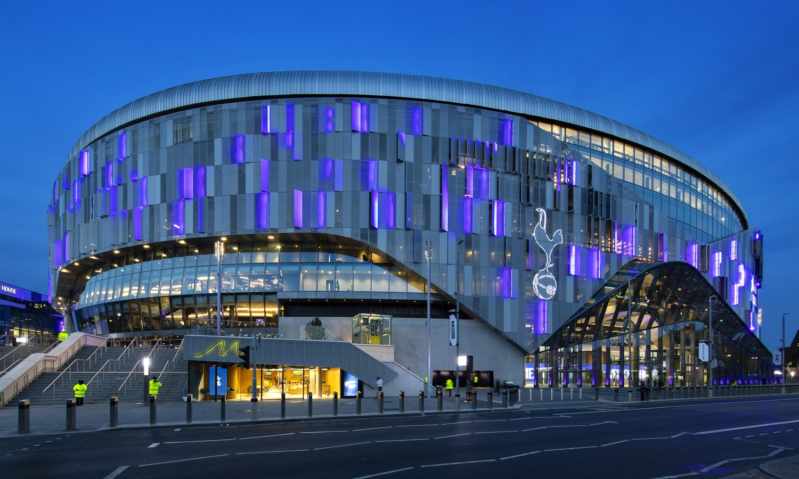

Project management, B2B and B2C paid media strategy and activation for the club's partnerships platform.

Paid and organic social account lead advising on GTM strategy and storytelling for the content and social streams of Tottenham's B2B marketing and partnerships platform. Responsible for campaign planning, execution and optimisation, all aligned with club sales team goals; generating leads for major assets like Front of Shirt.
"George was brought in to help shape our B2B marketing strategy and campaign activation for one of Tottenham's commercial and partnership initiatives. He brought fantastic strategic clarity to how we position the club's B2B story, helping to build a data-led strategy designed to elevate our brand awareness and engage prospective commercial partners."— Carla Guigui, Principal Partnerships, Tottenham Hotspur